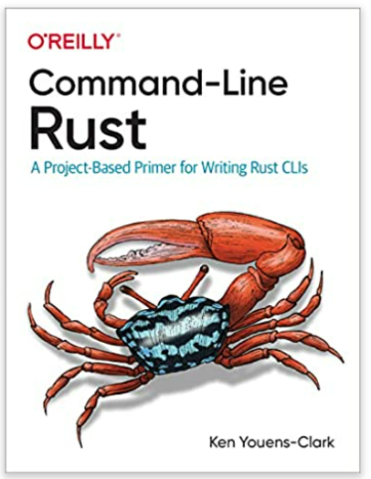

连续几年，Rust 在 Stack Overflow 的年度开发者调查中被评为“最喜爱的编程语言”。这种开源系统编程语言现在用于从游戏引擎和操作系统到浏览器组件和虚拟现实模拟引擎的所有事物。但 Rust 也是一种极其复杂的语言，其学习曲线非常困难。
本指南不是专注于整个语言，而是在每章中使用一个小型、完整、专注的程序来教授 Rust。作者 Ken Youens-Clark 向您展示了如何启动、编写和测试每个程序以创建成品。您将学习如何处理 Rust 中的错误、读写文件以及使用正则表达式、Rust 类型、结构等。

包括：
- 使用 Rust 的标准库和数据类型（例如字符串、向量、字典和集合）来创建系统程序
- 编写和测试 Rust 程序和函数
- 读写文件，包括标准输入、标准输出和标准错误
- 记录和验证命令行参数
- 编写优雅失败的程序
- 解析原始文本和分隔文本
- 使用和控制随机性
这本书是在实际场景中练习编写 Rust 的好方法。Ken 制定了一条途径来培养您在测试、使用板条箱和解决常见问题方面的技能。– Carol Nichols, Cofounder, Integer 32, co-author of 《The Rust Programming Language (NoStarch, 2018)》
许多开始修补 Rust 的人都在努力知道如何将其应用到他们的日常工作中。 命令行 Rust 是一个很好的补救措施。它向您展示了如何构建可以向您和您的同事证明 Rust 值得学习的实用程序。 – Tim McNamara, author of 《Rust In Action (Manning, 2021)》
这本书不是专注于整个语言，而是在每一章中使用一个小型、完整的程序来讲解 Rust。作者 Ken Youens-Clark 向你展示了如何启动、编写和测试每个程序以创建成品。你将学习如何处理 Rust 中的错误、读写文件以及使用正则表达式、Rust 类型、结构等等。